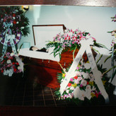

- 加入LOFTER

- 走过的路(3) 在加拿大凡是与health care有关的职业，要求的都特别严格。除了医生以外，物理治疗师，药剂师，验光师，等等都需要完成了第一个大学学位后才可以申请。前不久听说护理专业也将步此后尘。护理员都必須修读半年的课程，完成6周的实习才可取得执照。想当年辞了林太太的工，我就凭着国内的这点医学底子去碰运气一找护理机构当护理員。想先拿点护理经验，当然还有钞票进帳。(有工作经验对找工是特别的关键，这是到北美后才知道的)。联糸了好几家机构，只有一家答应让我去面试。也是巧，那天接我电话的正是这间机构的总监。听说我是华人，又有医学背...
- 2015年的春节 今年的春节是我一人过的。年三十晚正好是星期三，我的休息日。年初一是周四，我拿了一天的假。也是听香港来的同事在那里忽悠，年初一千万别上班。理由是：这天上班万一发生什么不愉快的事，那可是要倒一年的霉运。我倒宁可相信：不要一年忙到头。年初一就得歇着，预示着一年都会笃笃摇摇。有财慢慢发，有钱慢慢赚。好意头！儿子早就来了电话：主任准假，可带教的老师要去参加国际学术会(为此己准备了三年)，还在当第三年的小医生仔当然识做。母亲一听連忙说：改期再和我们一起过年。先生则总在忙出忙近，准备升大学的高中生等着成绩出来最后的拍板。在大学的学生忙着准备考试加班加课。...
- 黃舅舅儿女们的来访(1)也是母亲来电告之：黄健要带着弟妹们来多倫多。黃健是黃舅舅的大儿子。和我一样是峰顶浪尖上66届的老高三。接下来是大妹妹黃宁，小妹妹黃嘉，最小的弟弟黃欣。黃舅舅的儿女们和我们三兄妹一样，也己经陆续，分批的由国内全部移民到了北美。黄健和弟弟在西海岸，三番市附近。二姐妹则在芝加哥。要一起过来还真不容易。 在博文：写在清明时以及大舅中，我己介绍了黄舅舅与我们家的这种不是亲舅舅却胜似亲舅舅的感情。还记得小时侯，就在新安里的大院，父亲拍摄了一張黃舅妈带着我们三兄妹以及黃健的照片，冬天，都穿得棉鼓鼓的，黃健还戴了一顶航空帽。在12年回国时，在和曹前，張晓峰聚会的那次，黄健也赶了过来。这才知道张...
- 常红玉老师 拿了几天的假，和刚开完会的儿子回到了他在京士顿的公寓。也只有在他那儿才算是真正的休闲。小小的公寓二三..下就打扫完了。儿子堆在桌子，茶几上的东西我都不碰。.在我看来这乱七八糟似垃圾的东西，指不定就是儿子的什么资料，数据。就像在家里先生的办公室，常常丢得乱得就像电影里兵临城下仓皇逃窜的那場景。好心帮他去收拾，換来一句话:就怕你来收。一收什么都找不到。别看我乱，乱中有序。什么强盗逻辑！現在学了乖，看見他凛乱的办公室，一关门了事。眼不見，心不煩！接下来就检查儿子住处的冰箱，厨櫃里的生熟食品。这些给他送过来的食品，还留在...
- 黃舅舅儿女们的来访(1)也是母亲来电告之：黄健要带着弟妹们来多倫多。黃健是黃舅舅的大儿子。和我一样是峰顶浪尖上66届的老高三。接下来是大妹妹黃宁，小妹妹黃嘉，最小的弟弟黃欣。黃舅舅的儿女们和我们三兄妹一样，也己经陆续，分批的由国内全部移民到了北美。黄健和弟弟在西海岸，三番市附近。二姐妹则在芝加哥。要一起过来还真不容易。 在博文：写在清明时以及大舅中，我己介绍了黄舅舅与我们家的这种不是亲舅舅却胜似亲舅舅的感情。还记得小时侯，就在新安里的大院，父亲拍摄了一張黃舅妈带着我们三兄妹以及黃健的照片，冬天，都穿得棉鼓鼓的，黃健还戴了一顶航空帽。在12年回国时，在和曹前，張晓峰聚会的那次，黄健也赶了过来。这才知道张...
- 視频里的聚会 只要有时间我都会看看大学同学的微信群。可看到许多有趣的同学们丢上来的視频，还可以偶尔和他们互动一下。夏天到了，外面的花草也得花时间，所以上微信的时间更少。那天正巧看到大薇那山摇地动的豪言壮語:美国我来啦！知道她即将开始美利坚之游。 在校时与大薇既不是一个政治学习组，又不是一个寝室。平时接触的不多。但她的口才了得还是有印象的。什么事到她嘴里从头到尾，从里到外，一五一十给你讲得头头是道。不难看出她的阅读量是不小的。生活阅...
- 
- Fey-费，我的同事 刚忙完住客们的晚餐坐在电脑前准备写报告，接到了三楼同事的电话告之:给Fey举办的小小Party马上开始。让我一定要去。再一问才知道是Fey退休了！咳，真看不出，她退休了！自我开始在护理 院2S做Part一time,接着fu11一time,她一直跟着我，直到3年前被调到3N为止，我们整整在一起工作了9年，但却不知道她的年纪。这是在北美养成.的习惯，不该问的别瞎打听，这是对别人起码的尊重。矮小，整洁的Fey总是笑咪咪的，上班从不迟到。就祘大雪暴的天气，也照常准时到。不过路上可是辗转了三个多小时。她不开車，又住的远。几次问起她为什么不搬得离单位近一点，总是答...